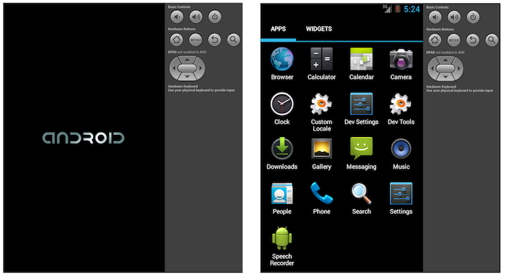
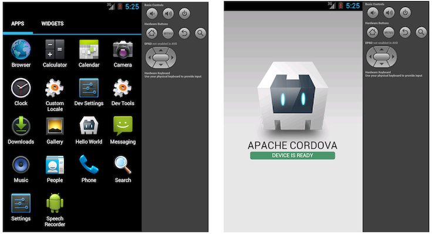

The Command-Line Interface
This guide shows you how to create applications and deploy them to
various native mobile platforms using the cordova command-line
interface (CLI). This tool allows you to create new projects, build
them on different platforms, and run on real devices or within emulators. The CLI
is the main tool to use for the cross-platform workflow (See the Overview for a description
of the various workflows.) However, you can also use the CLI to initialize project code, after
which you use various platforms' SDKs and shell tools for continued development.
Prerequisites
Before running any command-line tools, you need to install SDKs for each platform you wish to target. (See the Platform Guides for more details.)
To add support or rebuild a project for any platform, you need to run the command-line interface from the same machine that supports the platform's SDK. The CLI supports the following combinations:
- iOS (Mac)
- Amazon Fire OS (Mac, Linux, Windows)
- Android (Mac, Linux)
- BlackBerry 10 (Mac, Linux, Windows)
- Windows Phone 7 (Windows)
- Windows Phone 8 (Windows)
- Windows 8 (Windows)
- Firefox OS (Mac, Linux, Windows)
On the Mac, the command-line is available via the Terminal application. On the PC, it's available as Command Prompt under Accessories.
The more likely it is that you run the CLI from different machines, the more it makes sense to maintain a remote source code repository, whose assets you pull down to local working directories.
To install the cordova command-line tool, follow these steps:
Download and install Node.js. Following installation, you should be able to invoke
nodeornpmon your command line.-
Install the
cordovautility. In Unix, prefixing the additionalsudocommand may be necessary to install development utilities in otherwise restricted directories:$ sudo npm install -g cordovaThe installation log may produce errors for any uninstalled platform SDKs. Following installation, you should be able to run
cordovaon the command line.NOTE: The
-gflag above tells npm to install cordova globally. You may need to add the npm directory to your PATH in order to invoke globally installed npm modules. On Windows, npm can usually be found atC:\Users\username\AppData\Roaming\npmand on Unix at/usr/local/share/npm.
Create the App
Go to the directory where you maintain your source code, and run a command such as the following:
$ cordova create hello com.example.hello HelloWorld
It may take some time for the command to complete, so be patient. Running
the command with the -d option displays information about its progress.
The first argument specifies a hello directory to be generated
for your project. Its www subdirectory houses your application's
home page, along with various resources under css, js, and img,
which follow common web development file-naming conventions. The
config.xml file contains important metadata needed to generate and
distribute the application.
The other two arguments are optional: the com.example.hello argument
provides your project with a reverse domain-style identifier, and the
HelloWorld provides the application's display text. You can edit
both of these values later in the config.xml file.
Add Platforms
All subsequent commands need to be run within the project's directory, or any subdirectories within its scope:
$ cd hello
Before you can build the project, you need to specify a set of target platforms. Your ability to run these commands depends on whether your machine supports each SDK, and whether you have already installed each SDK. Run any of these from a Mac:
$ cordova platform add ios
$ cordova platform add amazon-fireos
$ cordova platform add android
$ cordova platform add blackberry10
$ cordova platform add firefoxos
Run any of these from a Windows machine, where wp refers to different versions of the Windows Phone operating system:
$ cordova platform add wp7
$ cordova platform add wp8
$ cordova platform add windows8
$ cordova platform add amazon-fireos
$ cordova platform add android
$ cordova platform add blackberry10
$ cordova platform add firefoxos
Run this to check your current set of platforms:
$ cordova platforms ls
(Note the platform and platforms commands are synonymous.)
Run either of the following synonymous commands to remove a platform:
$ cordova platform remove blackberry10
$ cordova platform rm amazon-fireos
$ cordova platform rm android
Running commands to add or remove platforms affects the contents of
the project's platforms directory, where each specified platform
appears as a subdirectory. The www source directory is reproduced
within each platform's subdirectory, appearing for example in
platforms/ios/www or platforms/android/assets/www. Because the CLI
constantly copies over files from the source www folder, you should only
edit these files and not the ones located under the platforms subdirectories.
If you use version control software, you should add this source www folder,
along with the merges folder, to your version control system. (More information
about the merges folder can be found in the Customize Each Platform section below.)
WARNING: When using the CLI to build your application, you are strongly discouraged
from editing any files in the /platforms/ folder unless you know what you are doing
or are specifically told otherwise in documentation. This is because the files in the
/platforms/ direcotry will be overwritten on prepare or plugin reinstallation.
If you wish at this point, you can use an SDK such as Eclipse or Xcode
to open the project you created. You will need to open the derivative set of assets
from the /platforms/ directory to develop with an SDK. This is because
the SDK specific metadata files are stored within the appropriate /platform/ subdirectory.
(See the Platform Guides for information on how to develop applications within each IDE.)
Use this approach if you simply want to initialize a project using the CLI and
then switch to an SDK for native work.
Read on if you wish to use the cross-platform workflow approach (the CLI) for the entire development cycle.
Build the App
By default, the cordova create script generates a skeletal web-based
application whose home page is the project's www/index.html file.
Edit this application however you want, but any initialization should
be specified as part of the deviceready event handler, referenced by
default from www/js/index.js.
Run the following command to iteratively build the project:
$ cordova build
This generates platform-specific code within the project's platforms
subdirectory. You can optionally limit the scope of each build to
specific platforms:
$ cordova build ios
The cordova build command is a shorthand for the following, which in
this example is also targeted to a single platform:
$ cordova prepare ios
$ cordova compile ios
In this case, once you run prepare, you can use Apple's Xcode SDK as
an alternative to modify and compile the platform-specific code that
Cordova generates within platforms/ios. You can use the same
approach with other platforms' SDKs.
Test the App on an Emulator or Device
SDKs for mobile platforms often come bundled with emulators that execute a device image, so that you can launch the app from the home screen and see how it interacts with many platform features. Run a command such as the following to rebuild the app and view it within a specific platform's emulator:
$ cordova emulate android
Some mobile platforms emulate a particular device by default, such as the iPhone for iOS projects. For other platforms, you may need to first associate a device with an emulator.
Note: Emulator support is currently not available for Amazon Fire OS
(See the Platform Guides for details.)
For example, you may first run the android command to launch the
Android SDK, then run a particular device image, which launches it
according to its default behavior:

Following up with the cordova emulate command refreshes the emulator
image to display the latest application, which is now available for
launch from the home screen:

Alternately, you can plug the handset into your computer and test the app directly:
$ cordova run android
Before running this command, you need to set up the device for testing, following procedures that vary for each platform. In Android and Amazon Fire OS devices, you would have to enable a USB debugging option on the device, and perhaps add a USB driver depending on your development environmnent. See Platform Guides for details on each platform's requirements.
Add Plugin Features
When you build and view a new project, the default application that appears doesn't do very much. You can modify the app in many ways to take advantage of standard web technologies, but for the app to communicate closely with various device-level features, you need to add plugins that provide access to core Cordova APIs.
A plugin is a bit of add-on code that provides an interface to
native components. You can design your own plugin interface, for
example when designing a hybrid app that mixes a Cordova WebView with
native components. (See Embedding WebViews and Plugin Development
Guide for details.) More commonly, you would add a plugin to enable
one of Cordova's basic device-level features
detailed in the API Reference. A list of these plugins, including
additional plugins provided by the community, can be found at
plugins.cordova.io. You can use
the CLI to search for plugins from this registry. For example,
searching for bar and code produces a single result that matches
both terms as case-insensitive substrings:
$ cordova plugin search bar code
com.phonegap.plugins.barcodescanner - Scans Barcodes
Searching for only the bar term yields and additional result:
org.apache.cordova.statusbar - Cordova StatusBar Plugin
The cordova plugin add command requires you to specify the
repository for the plugin code. Please note that when you follow the
Web Project Dev workflow and use the CLI, the CLI will take care of adding
the plugin code to the appropriate place for each platform. (If you are following the
Native Project Dev Workflow, you will have to add plugins using Plugman (guide link here),
multiple times for each platform.)
Here are examples of how you might use the CLI to add features to the app:
-
Basic device information (Device API):
$ cordova plugin add org.apache.cordova.device -
Network Connection and Battery Events:
$ cordova plugin add org.apache.cordova.network-information $ cordova plugin add org.apache.cordova.battery-status -
Accelerometer, Compass, and Geolocation:
$ cordova plugin add org.apache.cordova.device-motion $ cordova plugin add org.apache.cordova.device-orientation $ cordova plugin add org.apache.cordova.geolocation -
Camera, Media playback and Capture:
$ cordova plugin add org.apache.cordova.camera $ cordova plugin add org.apache.cordova.media-capture $ cordova plugin add org.apache.cordova.media -
Access files on device or network (File API):
$ cordova plugin add org.apache.cordova.file $ cordova plugin add org.apache.cordova.file-transfer -
Notification via dialog box or vibration:
$ cordova plugin add org.apache.cordova.dialogs $ cordova plugin add org.apache.cordova.vibration -
$ cordova plugin add org.apache.cordova.contacts -
$ cordova plugin add org.apache.cordova.globalization -
$ cordova plugin add org.apache.cordova.splashscreen -
Open new browser windows (InAppBrowser):
$ cordova plugin add org.apache.cordova.inappbrowser -
Debug console:
$ cordova plugin add org.apache.cordova.console
Use plugin ls (or plugin list, or plugin by itself) to view
currently installed plugins. Each displays by its identifier:
$ cordova plugin ls # or 'plugin list'
[ 'org.apache.cordova.console' ]
To remove a plugin, refer to it by the same identifier that appears in the listing. For example, here is how you would remove support for a debug console from a release version:
$ cordova plugin rm org.apache.cordova.console
$ cordova plugin remove org.apache.cordova.console # same
You can batch-remove or add plugins by specifying more than one argument for each command:
$ cordova plugin add org.apache.cordova.console org.apache.cordova.device
Advanced Plugin Options
When adding a plugin, several options allow you to specify from where
to fetch the plugin. The examples above use a well-known
registry.cordova.io registry, and the plugin is specified by the
id:
$ cordova plugin add org.apache.cordova.console
The id may also include the plugin's version number, appended after
an @ character. The latest version is an alias for the most recent
version. For example:
$ cordova plugin add org.apache.cordova.console@latest
$ cordova plugin add org.apache.cordova.console@0.2.1
If the plugin is not registered at registry.cordova.io but is located in
another git repository, you can specify an alternate URL:
$ cordova plugin add https://github.com/apache/cordova-plugin-console.git
The git example above fetches the plugin from the end of the master
branch, but an alternate git-ref such as a tag or branch can be
appended after a # character:
$ cordova plugin add https://github.com/apache/cordova-plugin-console.git#r0.2.0
If the plugin (and its plugin.xml file) is in a subdirectory within
the git repo, you can specify it with a : character. Note that the
# character is still needed:
$ cordova plugin add https://github.com/someone/aplugin.git#:/my/sub/dir
You can also combine both the git-ref and the subdirectory:
$ cordova plugin add https://github.com/someone/aplugin.git#r0.0.1:/my/sub/dir
Alternately, specify a local path to the plugin directory that
contains the plugin.xml file:
$ cordova plugin add ../my_plugin_dir
Using merges to Customize Each Platform
While Cordova allows you to easily deploy an app for many different
platforms, sometimes you need to add customizations. In that case,
you don't want to modify the source files in various www directories
within the top-level platforms directory, because they're regularly
replaced with the top-level www directory's cross-platform source.
Instead, the top-level merges directory offers a place to specify
assets to deploy on specific platforms. Each platform-specific
subdirectory within merges mirrors the directory structure of the
www source tree, allowing you to override or add files as needed.
For example, here is how you might uses merges to boost the default
font size for Android and Amazon Fire OS devices:
-
Edit the
www/index.htmlfile, adding a link to an additional CSS file,overrides.cssin this case:<link rel="stylesheet" type="text/css" href="css/overrides.css" /> Optionally create an empty
www/css/overrides.cssfile, which would apply for all non-Android builds, preventing a missing-file error.-
Create a
csssubdirectory withinmerges/android, then add a correspondingoverrides.cssfile. Specify CSS that overrides the 12-point default font size specified withinwww/css/index.css, for example:body { font-size:14px; }
When you rebuild the project, the Android version features the custom font size, while others remain unchanged.
You can also use merges to add files not present in the original
www directory. For example, an app can incorporate a back button
graphic into the iOS interface, stored in
merges/ios/img/back_button.png, while the Android version can
instead capture backbutton events from the corresponding hardware
button.
Help Commands
Cordova features a couple of global commands, which may help you if
you get stuck or experience a problem. The help command displays
all available Cordova commands and their syntax:
$ cordova help
$ cordova # same
The info command produces a listing of potentially useful details,
such as currently installed platforms and plugins, SDK versions for
each platform, and versions of the CLI and node.js:
$ cordova info
It both presents the information to screen and captures the output in
a local info.txt file.
NOTE: Currently, only details on iOS and Android platforms are available.
Updating Cordova and Your Project
After installing the cordova utility, you can always update it to
the latest version by running the following command:
$ sudo npm update -g cordova
Use this syntax to install a specific version:
$ sudo npm install -g cordova@3.1.0
Run cordova -v to see which version is currently running. Run the npm
info command for a longer listing that includes the current version
along with other available version numbers:
$ npm info cordova
Cordova 3.0 is the first version to support the command-line interface
described in this section. If you are updating from a version prior to
3.0, you need to create a new project as described above, then copy
the older application's assets into the top-level www directory.
Where applicable, further details about upgrading to 3.0 are available
in the Platform Guides. Once you upgrade to the cordova
command-line interface and use npm update to stay current, the more
time-consuming procedures described there are no longer relevant.
Cordova 3.0+ may still require various changes to
project-level directory structures and other dependencies. After you
run the npm command above to update Cordova itself, you may need to
ensure your project's resources conform to the latest version's
requirements. Run a command such as the following for each platform
you're building:
$ cordova platform update android
$ cordova platform update ios
...etc.